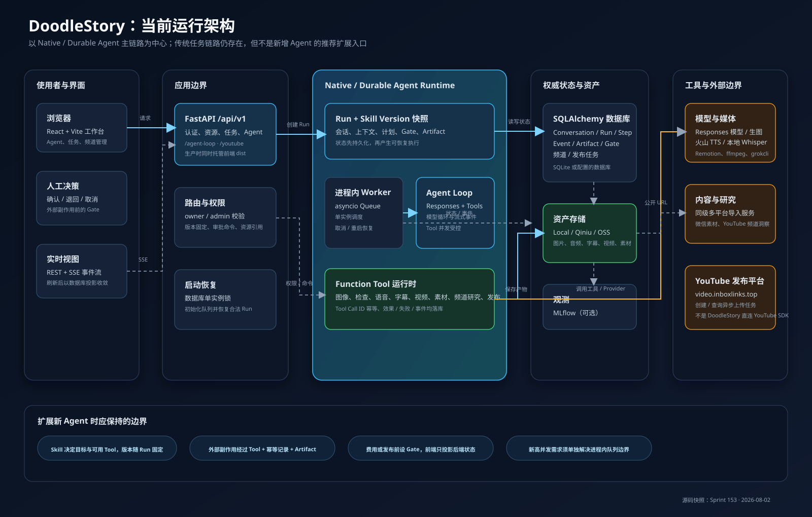
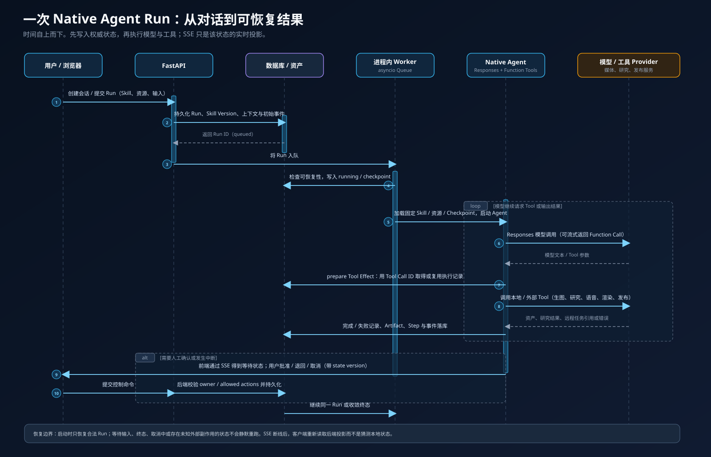
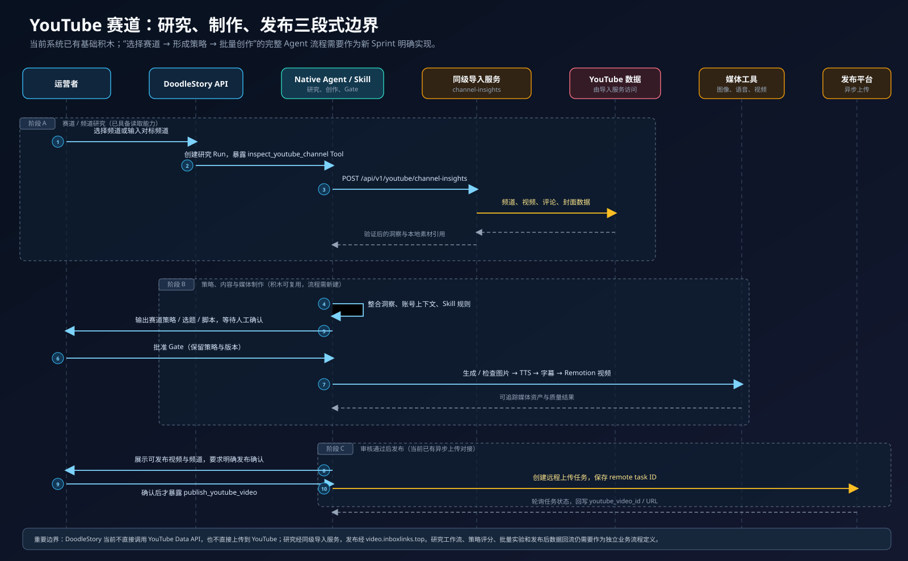

{kind=link}
Native Agent 基座
Run、Skill Version 快照、Step、Artifact、Approval、事件、取消和启动恢复已经在当前架构内；新流程可接入这些统一语义。
Architecture field guide · Sprint 153
这是一份面向新合作者的本地项目导览。它以当前源码和已完成 Sprint 为准，解释 DoodleStory 已经拥有的运行积木、它们如何协作，以及把 YouTube 新赛道研究与视频制作做成新 Agent 时应该从哪里切入。
01 · Mental model
用户在 React 工作台提交目标。FastAPI 先把会话、Run、Skill 版本与资源引用写入数据库；单实例的进程内 Worker 再运行 Native Agent。模型只决定下一步意图，真正产生图片、语音、字幕、视频、研究结果或发布动作的是受控 Function Tool。每个关键步骤、产物、审批与事件会回写数据库，再通过 SSE 投影到界面。
02 · System map

Run、Skill Version 快照、Step、Artifact、Approval、事件、取消和启动恢复已经在当前架构内；新流程可接入这些统一语义。
模型、图片、存储、研究和发布服务依赖环境配置、账号和可用性。Tool 存在不等于 Provider 已为新赛道做好配置。
当前 Worker 是单实例进程内队列；赛道发现、策略评分、批量实验、数据回流不是一个已完成的通用工作流。
03 · Agent lifecycle
关键不是对话本身，而是先把执行事实写入权威状态：输入、Skill 版本、资源、模型请求、Tool Effect、产物、审批和事件都有对应的记录。模型重试或刷新页面不应凭前端猜测继续执行。

会话、Skill Version、用户资源和上下文快照先入库。
进程内队列启动合法 Run，持久化当前状态与 Checkpoint。
Responses 模型选择下一步，Function Tool 有明确白名单。
以 Tool Call ID 做幂等；成功、失败、资产和事件均回写。
发布或高成本动作需要批准；SSE 只展示后端权威投影。
04 · YouTube today
目前的研究 Tool 能读取频道洞察；账号上下文 Tool 能提供频道定位、对标账号和近期视频；媒体 Tool 能产出图片、旁白、字幕和 Remotion 视频；发布 Tool 在明确确认后会调用外部视频平台创建异步上传任务。这些是构建新赛道 Agent 的原材料。

/api/v1/youtube/channel-insights；视频发布由 video.inboxlinks.top 的 YouTube 上传任务 API 承担。新流程设计时应分别给研究失败、媒体失败和远程发布任务轮询定义状态，不要把它们归为同一个 Provider 错误。05 · Reusable building blocks
| 目标 | 当前可复用的能力 | 你仍需要定义的部分 | 状态 |
|---|---|---|---|
| 赛道 / 对标研究 | inspect_youtube_channel 读取频道、视频、评论、封面；账号上下文可查询已有账号资料。 | 候选池、研究维度、证据格式、评分模型、结论 Artifact。 | 流程待建 |
| 策略与选题 | Skill 版本固定、文本 Artifact、Gate、事件流、继续同一 Run。 | 策略模板、选题筛选、受众假设、风险规则和策略确认 Gate。 | 流程待建 |
| 视频制作 | 生图、图检、火山语音、本地 Whisper 字幕、Remotion 渲染与资产保存。 | 赛道专用脚本结构、镜头规范、素材许可、质量标准、成本与重跑规则。 | 能力可复用 |
| 频道发布 | 频道 / 可发布视频登记、明确确认、异步上传任务创建与结果回写。 | 赛道级标题 / 标签策略、发布时间策略、发布后数据读取与归因。 | 基础已具备 |
| 内容实验闭环 | 仓库已有内容迭代控制器 Skill 与实验文件结构。 | 将它与 YouTube 研究、Run Artifact、发布数据和策略更新统一为可验证的产品流程。 | 需要整合 |
| 规模化执行 | 单实例锁、启动恢复、取消和 Tool Effect 收敛。 | 跨进程 / 多实例队列、并发配额、调度、预算和更强的运维保障。 | 当前边界 |
06 · Blueprint
建议先做一个小而可验证的 Sprint，而不是一次性做“全自动频道”。例如：给定 3–10 个对标频道，产出一份可追溯的赛道研究报告和 3 个待确认选题；确认后才进入脚本与视频制作。这个切面能够真实验证研究 Tool、策略 Artifact、Gate 和后续媒体链的交接。
state_version；前端从 SSE 投影读取状态。支持取消、刷新、恢复和远程 Tool 不确定结果，不另造一套状态机。07 · Decisions and boundaries
Native Agent 当前使用 TEXT_FALLBACK_BASE_URL 的 Responses API；SiliconFlow 负责独立的 chat.completions、多模态和语音链路。允许模型名单也不等于每项能力都已接入。
当前 publish_youtube_video 只有在频道、可发布视频与明确确认均具备时才暴露。新流程不能把“生成成功”误当作“允许发布”。
进程内 asyncio.Queue 配合单实例锁适合当前规模和恢复语义。跨机器、高并发、定时批量生产要单独讨论，不应静默当作已有能力。
08 · Follow the evidence
产品形态、开发方式、部署依赖和当前已公开的能力总览。
完整产品规格、架构约束、Agent 运行时与媒体能力的详细定义。
已完成 Sprint、真实验收证据与未闭合问题；判断“是否完成”优先看这里。
当前 Native Agent、Function Tool 构建、模型客户端和执行循环的核心实现。
Run、事件、Tool Effect、产物和取消写入规则，解释为什么运行可追踪。
进程内队列、执行、取消和启动恢复，是当前调度边界的证据。
模型、媒体、存储、研究、发布、观测与内部 API 的真实出站地址和代码入口。
已本地化的发布平台 API 文档，共 11 篇，适合查看频道、上传任务和分析接口。
赛道比较、首轮验证建议、Agent 流程模板和外部依赖准备清单。
本文档的范围、非目标、验证标准与后续交接建议。
{kind=link}
{kind=link}